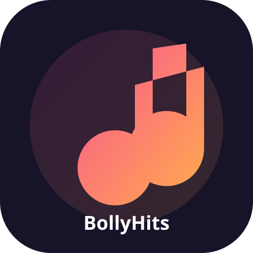

WHERE MELODY NEVER DIES…
♫ BollyHits & DesiZone Radio
Live radio player

● NOW PLAYING
Select a station
BollyHits Radio Network
Station | Listener Count
0:00 elapsed--:-- remaining
Ready to play
Live radio player

BollyHits Radio Network
Station | Listener Count